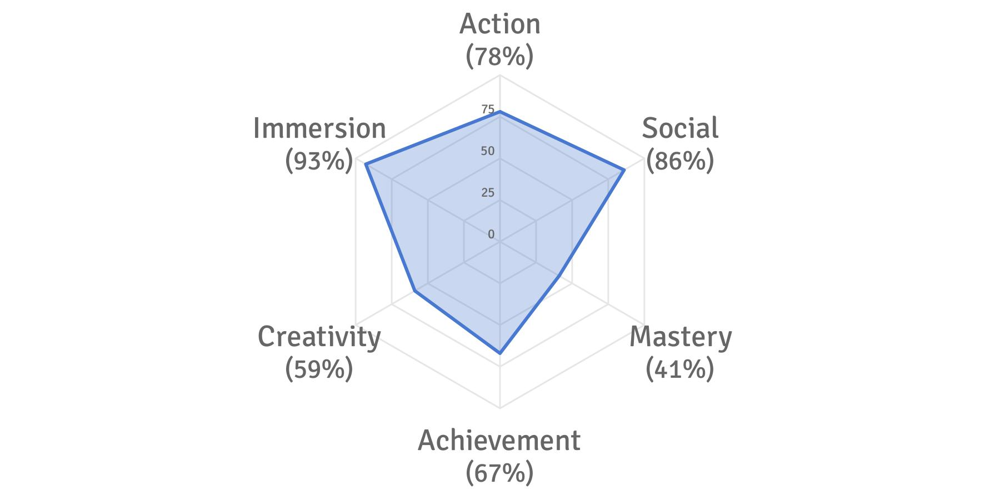

Workshop 2B - My Gamer Profile
This workshop required us to take a quick survey on Quantic Foundry
to find out about our gaming profile.
Essentially it shows what kind of games we like, be it games full of action and excitement or strategy and planning.
From there QuanticFoundry can suggest a few games based on our preferences. We must then answer a few questions after.
First of all, let's take a look at my Gamer Profile.

Does your motivation profile match your own understanding of why you play games?
My motivation profile mostly matched my own understanding of how I play games. I’m into
rhythm games like Osu!, Deemo and Cytus. I also love MOBA games like League of Legends.
I like games that test my reaction time such as CSGO and Hollow Knight. There are games such
as Cities Skyline that I enjoy but do not have the patience for. Though I like the aspect of
building stuff and creating new roadways and cities, it takes too much time and effort on my part
with very little action, so I resort to watching youtube videos of it rather than playing it, but to me it’s almost the same thing.
Are there any games you enjoy which do not match your motivation profile?
Yes there is. Surprisingly, I like games that consists of hours and hours of grinding. MapleStory is a good example,
I played that game for close to 10 years on and off, with close to 3,000 hours clocked in. It's fair to say that I enjoy that game a fair bit.
There are also artistic games like Ori and the Blind Forest and Hollow Knight that are visually beautiful to play that I enjoy. Games with good
storyline always gets me. Nier: Automata is a recent one that I just finished. the storyline is extensive and the game world is masterfully crafted.
How many of your top 10 recommended games have you played?
I've only played a few games out of the recommended list. That is because many of them are FPS, and I don't really have a thing for FPS games.
I only play them when my friends do, I don't particularly find it exciting to play alone.
Single player shooters are of course a no-no for me because the main reason FPS is fun is because of the competition for me.
Of those you have played, which have you enjoyed and which have you not? Briefly explain why.
I have enjoyed Overwatch and PlayerUnknown's Battlegrounds, only for a short while though. I bought Overwatch when it first came out
but stop playing after about 3 months in.I got tired of the teamfighting and fast-paced gameplay. Even though I enjoy fast-paced gameplay, Overwatch is a constant barrage of it and eventually I found it repetitive.
PUBG, on the other hand, became rather stale because of the constant hiding and waiting for enemies. Not seeing an enemy for close to half an hour out of the entire game only to get killed by someone you did not even have the time to spot is not exactly fun after the fresh genre settles in. I still play them both from time to time but as always I find myself turning to other games.